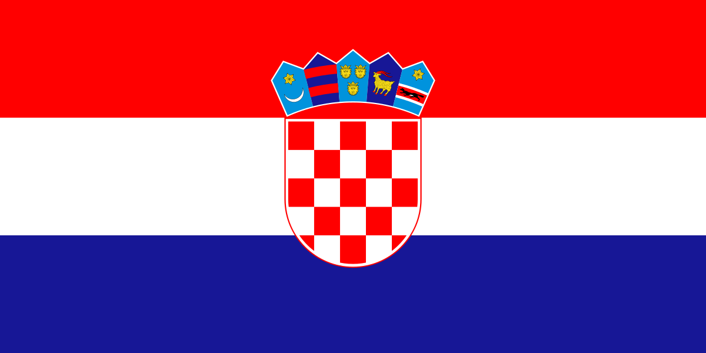

Panama
Panama
CroaziaCroazia obbligata a vincere, Panama pronta a sporcarla.
La Croazia parte favorita, ma arriva dal 4-2 subito contro l'Inghilterra e deve correggere la fase difensiva. Panama si mette a cinque dietro, abbassa il ritmo e prova a trasformare la partita in duelli, seconde palle e ripartenze laterali.
Le quote 7.00, 4.25 e 1.50 danno probabilita normalizzate intorno al 16% Panama, 26% pareggio e 58% Croazia. Il mio modello, pesando formazione e contesto, porta la Croazia al 61%, pareggio 24%, Panama 15%. La favorita e chiara, ma non siamo su un 1.20: Panama ha assetto conservativo e la Croazia ha ancora qualche crepa difensiva.
Il match pesa soprattutto sulla Croazia. Dopo aver preso quattro gol dall'Inghilterra, Dalic deve vincere senza perdere equilibrio. Panama invece puo accettare una partita piu povera, con Waterman isolato davanti e due esterni pronti a correre appena la Croazia perde palla.
La partita della Croazia
La Croazia costruisce con Modric e Petar Sucic, Pasalic tra le linee e Baturina piu alto sul lato destro. Perisic resta la fonte principale di cross e ampiezza, mentre Budimir e il riferimento in area contro i tre centrali panamensi. Gvardiol e Stanisic devono alzarsi, ma con attenzione: Panama cerca proprio lo spazio alle loro spalle.
La chiave non e soltanto il possesso. Contro il 5-4-1, la Croazia deve muovere il blocco da un lato all'altro e servire Budimir prima che l'area si riempia di maglie panamensi. Se Modric e Pasalic ricevono fronte alla porta, Panama rischia di difendere troppo bassa e concedere tiri dal limite.
La chiave Panama puo reggere se costringe la Croazia a cross statici. Se invece Modric accelera sul secondo lato e Perisic riceve con spazio, Budimir diventa un bersaglio molto difficile da controllare.
Come puo sopravvivere Panama
Il 5-4-1 e molto chiaro: Mosquera protetto da tre centrali, Blackman e Murillo come quinti, Cordoba e Harvey nella zona centrale, Barcenas e Rodriguez per uscire in ampiezza. Waterman deve fare un lavoro sporco: proteggere palla, prendere falli e permettere alla squadra di respirare.
Panama non dovrebbe avere tanto possesso, ma puo creare problemi su cross, lanci lunghi e transizioni fisiche. Barcenas e Rodriguez sono i primi due nomi per strappare: se la Croazia perde palla con i terzini alti, il rischio non e enorme ma esiste.
Tiri e tiri in porta
Croazia: 14-19 tiri, 5-8 nello specchio. Panama: 6-9 tiri, 1-3 in porta. Budimir e il terminale principale con 3-5 conclusioni e 1-2 nello specchio. Pasalic puo arrivare a 2-4 tiri entrando in area da seconda punta, Perisic 1-3 tra cross e conclusioni, Baturina 1-2 dal lato destro.
Per Panama, Waterman dovrebbe produrre 1-3 tiri, quasi tutti in situazione sporca. Barcenas e Rodriguez sono da 1-2 tentativi, mentre Harvey puo calciare da fuori se la Croazia respinge male. La scelta piu solida resta Budimir 2+ tiri; piu aggressiva Budimir 1+ in porta.
Corner
Proiezione: Croazia 6-9 corner, Panama 2-4, totale 8-12. La Croazia dovrebbe spingere soprattutto a sinistra con Perisic e Gvardiol, generando cross deviati e respinte. Panama puo prendere qualche corner in transizione o su palla inattiva, ma il controllo territoriale resta croato.
Gerarchia: Croazia piu corner, Croazia over 5,5, over 8,5 totali. Se il primo gol tarda ad arrivare, la pressione croata alza molto la probabilita di 9+ corner complessivi.
Disciplina con Pierre Atcho
Atcho tende a intervenire quando la partita diventa fisica o spezzata. Qui il rischio cartellini nasce soprattutto dai duelli laterali e dai falli tattici su Modric/Pasalic. Mi aspetto 4-6 gialli, con Panama leggermente favorita per riceverne di piu.
Murillo e Blackman sono esposti sulle corse di Perisic e Baturina. Harvey e Cordoba rischiano in mezzo, perche devono scivolare su Modric e Pasalic senza concedere campo centrale. Tra i croati, Sucic e il primo nome se deve fermare una ripartenza di Barcenas.
Verdetto finale
Croazia vincente a 1.50 e coerente e resta la base migliore. L'Over 2,5 a 1.65 non e brutto, ma dipende molto dal primo gol: se la Croazia sblocca presto, il 2-0/3-0 diventa naturale; se Panama regge, la partita puo scendere verso 1-0 o 2-0.
Preferisco Croazia vincente, Multigol 1-3 o 2-4 e Croazia piu corner. No Goal a 1.80 e interessante ma non pulitissimo, perche Panama ha fisicita e la Croazia ha concesso troppo nella prima partita. Risultato centrale: 2-0 Croazia.